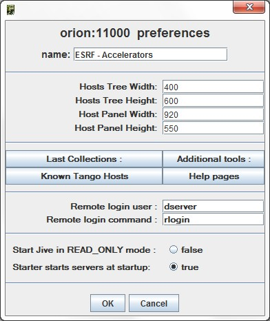
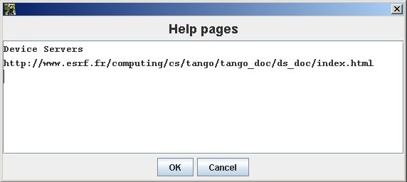
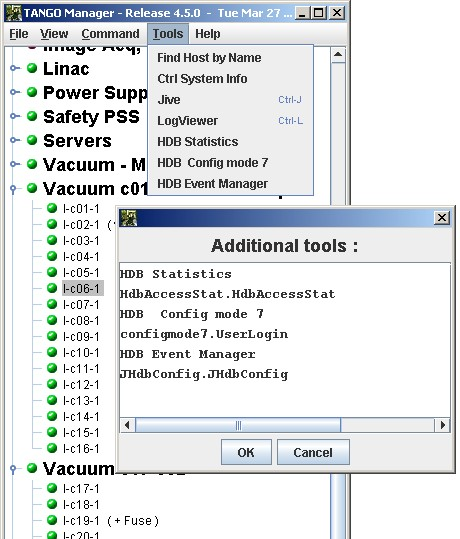

Astor Configuration¶
Astor can be configured using the following window. Click on menu to open
|  |
Note
To disable the Preference menu, start Astor with -DNO_PREF=true.
Control system name¶
This name will be displayed on top of Astor main window.
It could be useful when user has to manage several control systems.
Default window sizes¶
Hosts tree Width/Height defines the preferred size for the tree object in main window.
Host window Width/Height defines default maximum size for host window.
If the number of hosts needs a bigger window, scroll bars will be added.
Last Collections¶
Hosts can be distributed in families.
In the tree, the families are sorted by alphabetic order.
The property LastCollections give the possibility put collections (families) at the end of the tree.
It could be useful to put at the end of the tree, families like Not Critical, In Test, …
Additional html pages¶
The property HtmlHelps give the possibility to add specific html pages. This is a string array property.
- The first line is the message displayed in help menu.
- The second one is the URL address for the specified page.
The following example add a link to the Tango device servers pages:

Additional java Tools¶
The property Tools give the possibility to add java class to tools menu. These additional tools could be specific for one controle system This is a string array property.
One tool (java class) is define by two strings:
- The first line is the message displayed in tools menu.
- The second one is the class (and package) to be instancied.
The following example add 3 java tools used on ESRF machine control system for TACO HDB:

Remarks
- The tools java classes need to have a constructor with a JFrame parameter as parent.
- It need also to not exit if it has been instancied from a parent application.
- The tools class or jar file needs to be found in
$CLASSPATHof Astor startup.
KnownTangoHosts¶
This property give a list of TANGO_HOST to be controlled by Astor.
The TANGO_HOST can be change by typing a new name but the specified list will be available in a combo box.
RloginCmd¶
This property give the possibility change the default remote loggin command. The default command is telnet (or rlogin if RloginUser is defined).
RloginUser¶
This property give the possibility set the remote loggin to the specified user.
Jive in READ_ONLY mode¶
If this property is true the Jive application will be instancied in READ_ONLY mode. If the property is not set or false, Jive is in READ_WRITE mode.
Starter starts servers at startup¶
This boolean property allows the starter to starts the device servers when it starts.
If it is false, when the starter will be started, it will not start any server.
It could be useful when a large control system is re-started (e.g. after an electrical power cut) to do not overload the Tango database.